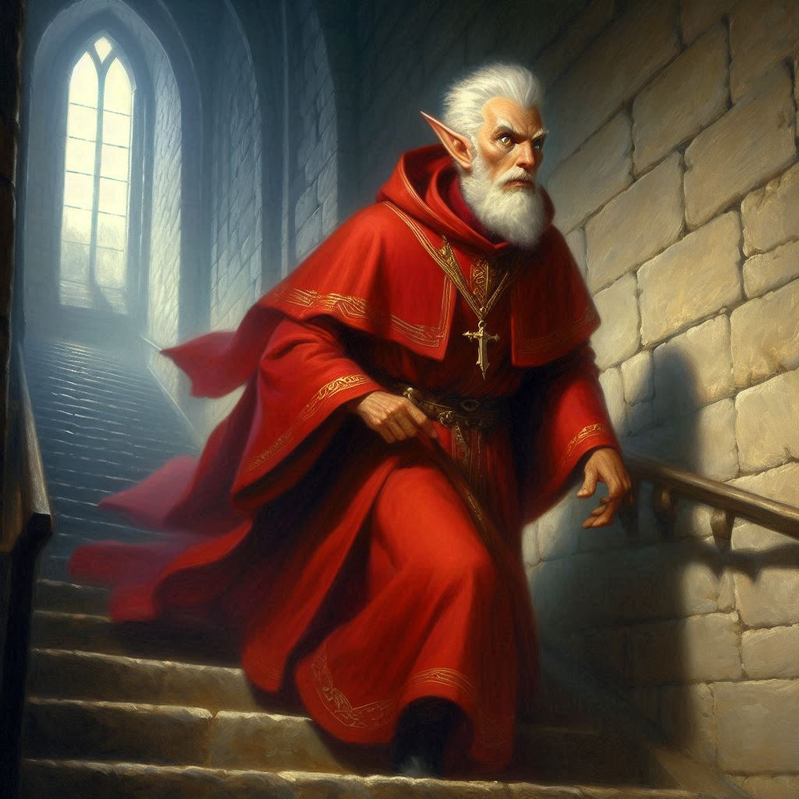
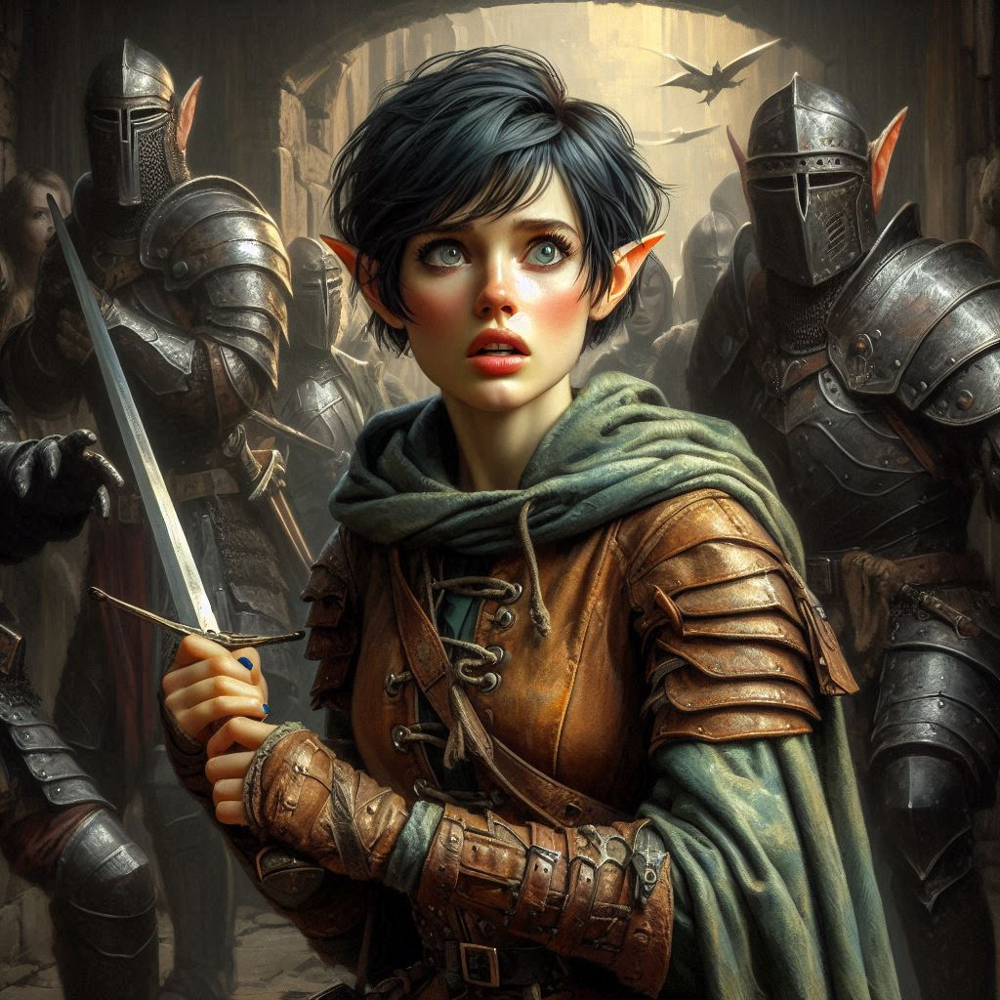

Into the Darkness
Your breath comes in short, sharp bursts as you grip your sword tighter, Elias groaning in pain behind you. The dark magic from Varis’s last spell still lingers in the air, an acrid stench of burnt ozone and something far more sinister. The Minister of Trade—no, the dark cleric—sneers at you from behind his desk, his fingers twitching with unholy energy.
But behind him, nestled among his wicked artifacts, sits the black crystal shard. Your mission was never about confronting Varis, but you can feel its pull, like a beacon of power humming just out of reach. You have no time to think. Elias coughs, struggling to rise, his wound bleeding freely onto the marble floor. If you hesitate, he will die.
With a battle cry, you lunge. Varis flicks his hand, sending a bolt of sickly green energy toward you. You pivot, your sword catching the spell’s force, deflecting it with sheer will and steel. His eyes widen—just for a moment—as you close the distance. Your blade slices through the air, catching him across his arm. He hisses, staggering back. You press the attack, your strikes fueled by desperation.
Then, without warning, he turns and thrusts a hand against the bookshelf behind him. The wall groans, shifting aside to reveal a dark passage. Before you can stop him, Varis vanishes into the shadows.
You hesitate for only a second.
“Elias,” you breathe, turning back. He’s pale, sweat glistening on his brow. “Can you stand?”
“I don’t think I have a choice,” he grits out, using the desk to push himself up. His movements are sluggish, but his grip on his dagger is steady. “Go. Stop him.”
You want to argue, to stay by his side, but the mission—the crystal—Varis—is slipping through your fingers. With one last glance, you sprint into the passage, sword at the ready.
The air is damp, the stone beneath your feet uneven. The walls close in, the scent of earth and decay suffocating. The further you descend, the more twisted the architecture becomes, as if reality itself bends under Varis’s corruption. Flickering torchlight casts eerie shadows against the walls, revealing carvings of dark elven script—words you can’t read but instinctively fear.
A whisper of movement—too late. Pain explodes in your wrist as your sword is knocked from your grasp. You whirl, raising your arms, but a second figure emerges from the darkness. A sharp kick to the back of your knee sends you to the ground. Strong hands seize your arms, forcing you down.
Dark elves.
You snarl, struggling, but their grip is iron. Their features are eerily beautiful, angular and otherworldly, their eyes gleaming with cruel amusement. One of them—taller than the rest, clad in ceremonial armor—steps forward, regarding you with cold detachment.
“The cleric was right,” he murmurs. “She came willingly.”
A shiver crawls down your spine. You twist in their grasp, but a surge of unnatural weakness overtakes you. Magic. They’ve bound you somehow. Your limbs feel sluggish, your thoughts muddled.
Varis steps forward from the darkness, his presence suffocating. “You have spirit, Kira. A shame you wasted it.”
“I’ll see you dead before this is over,” you spit, but your voice lacks its usual strength.
He laughs, the sound devoid of warmth. “Brave words from a girl with no sword.” He nods to the elves. “Take her to Hemlock Caverns. Yaldaboath is waiting.”
The last thing you see is the smirk on Varis’s face before darkness swallows you whole.